Mandatory · Below Grade 10
Practical Projects
Hands-on work focused on building devices, harvesting honey, running lab experiments, and creating real solutions.
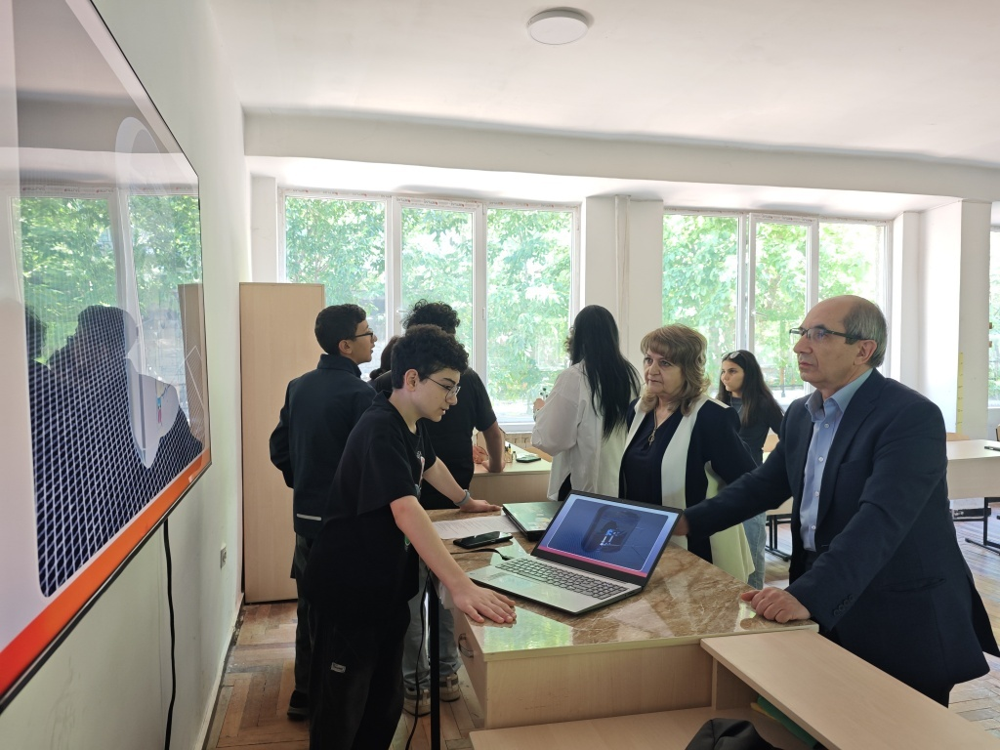
What ideas can we offer to schools abroad?
Ruslan Hovsepyan · Samvel Markosyan · Davit Mirakyan
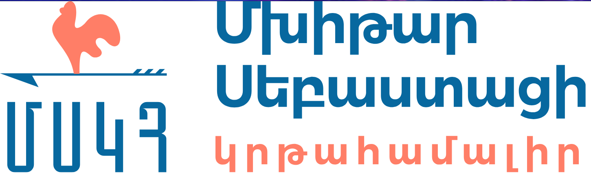
One connected neighborhood campus in Yerevan.
Artanish (Lake Sevan) & Arates (Highlands)
The Institutions Truly Interact
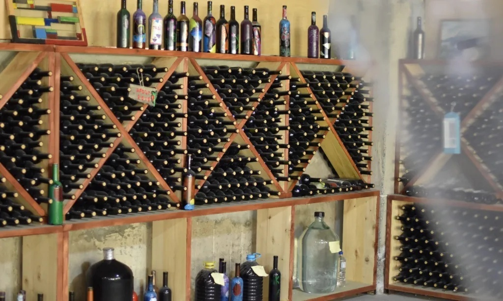
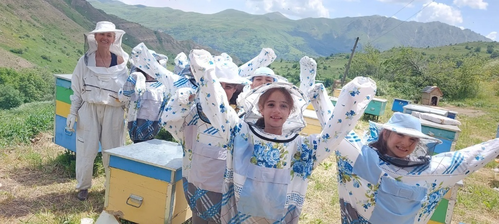
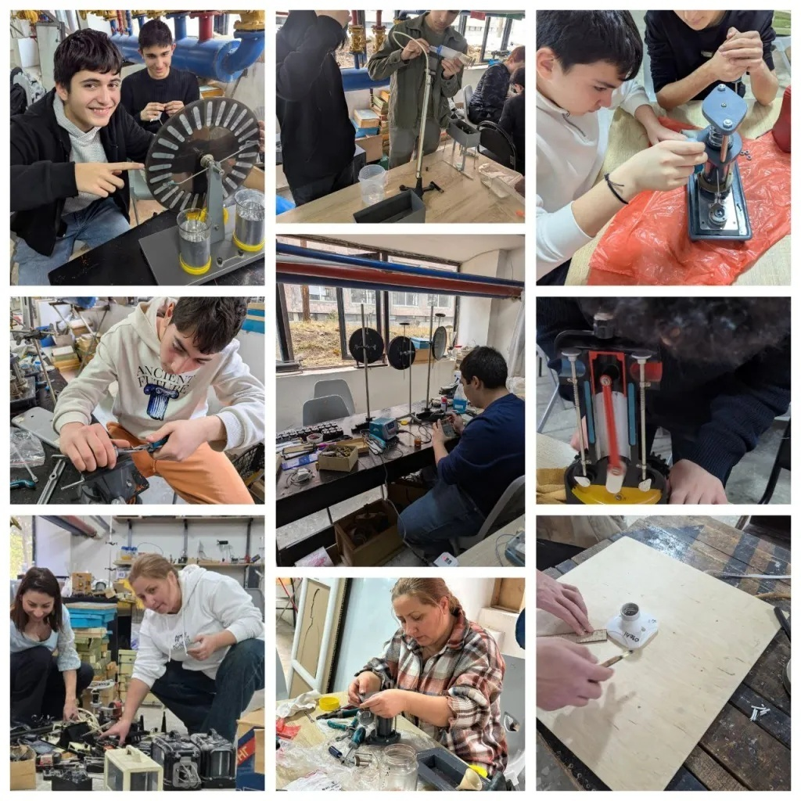
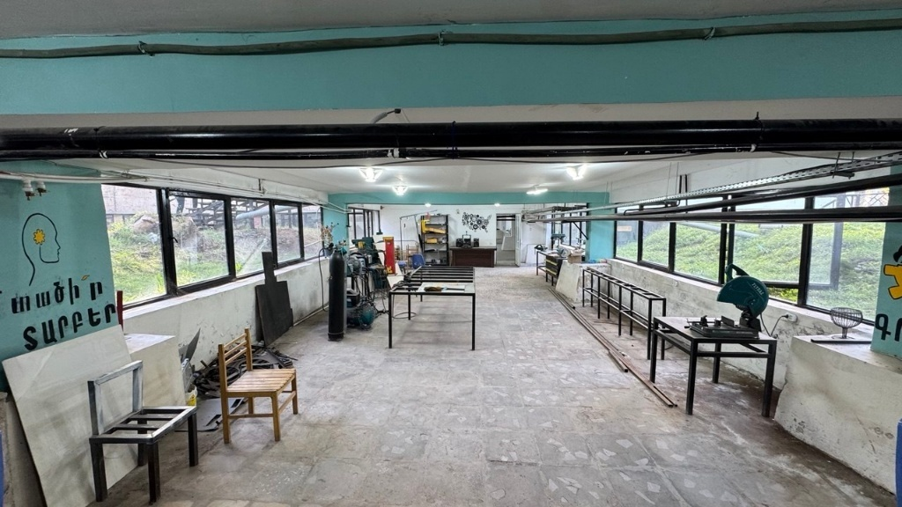
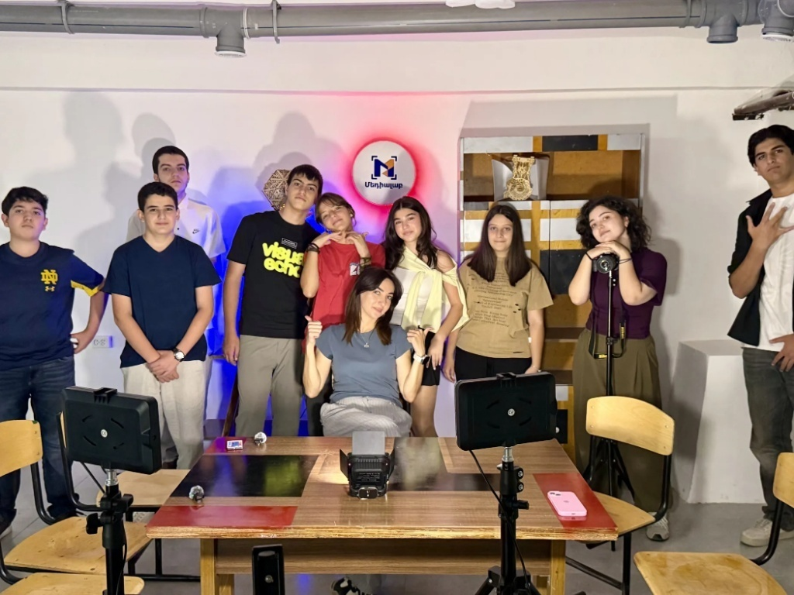
College students develop our own wine brand, while students of all ages harvest honey together in Arates.
Technolab creates real devices, equipment, and furniture for the entire ecosystem — alongside our Media Lab and much more.
Not every school can sustain such an ecosystem alone — that is why collaborating with other schools is essential.
Hands-on work focused on building devices, harvesting honey, running lab experiments, and creating real solutions.

Deep theoretical investigation that can also include practical project components, defended before peers and mentors.
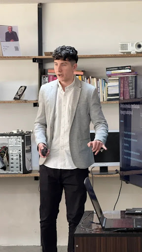
Journeys launching from Yerevan across all of Armenia
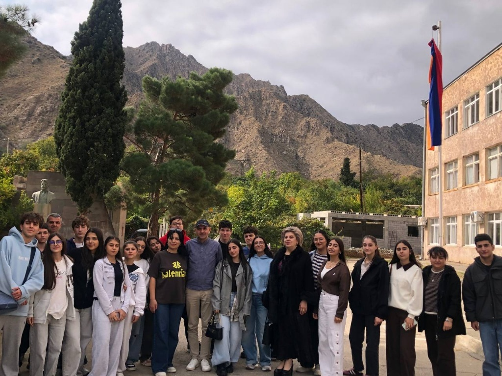
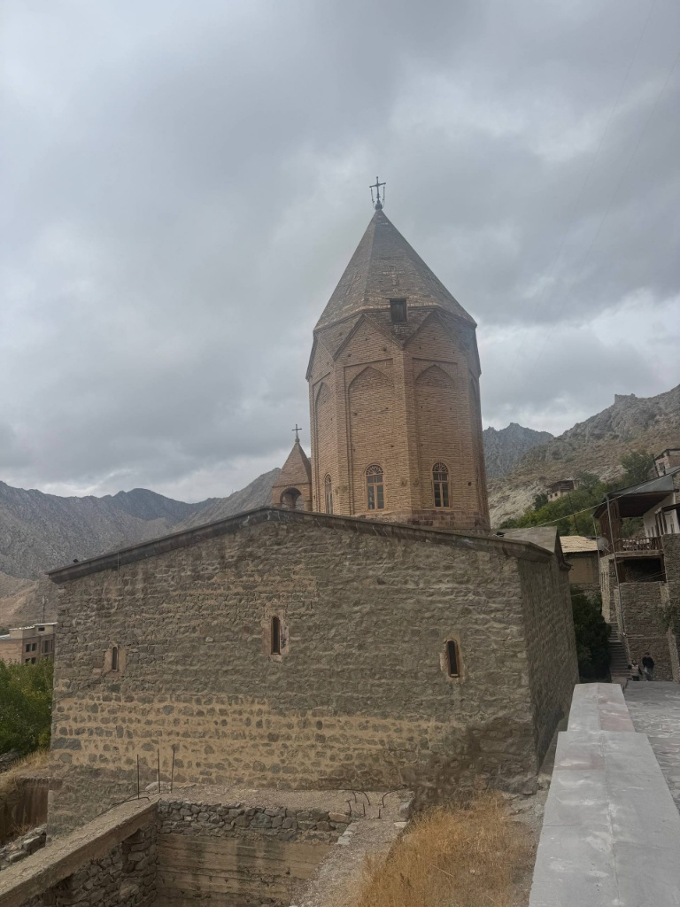
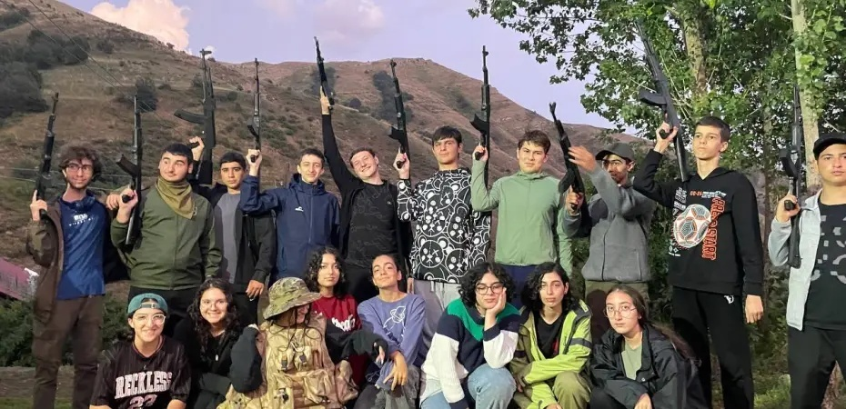
Discovering ancient monasteries, villages, and cultural heritage firsthand.
Every student hikes across diverse mountain trails throughout Armenia.
Highland camp blending outdoor life with robotics, ecology, and technology.
Year-round expeditions turning the entire country into an open classroom.
Paste a Google Maps API key or free Maps Demo Key to enable Google Maps JavaScript API on Slide 2. Saved locally in your browser.